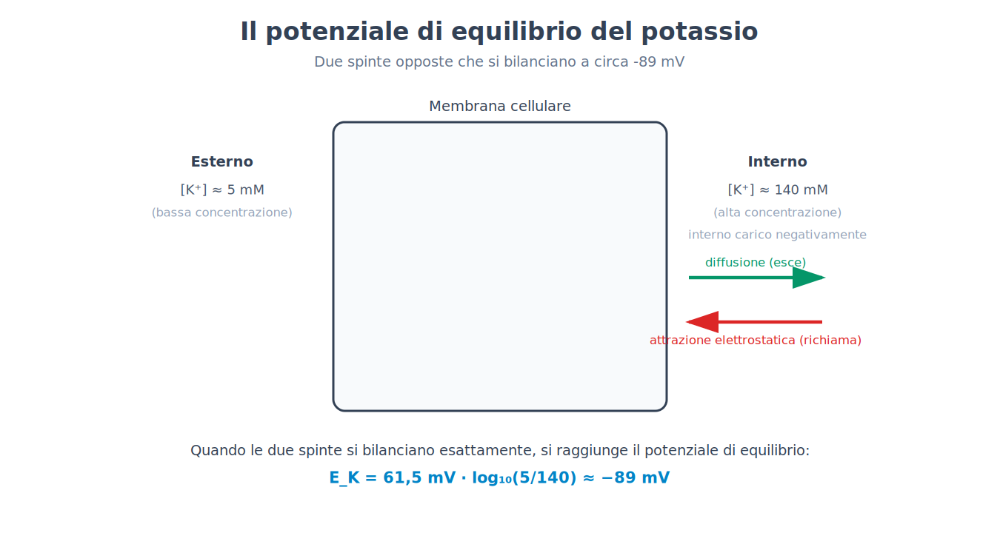
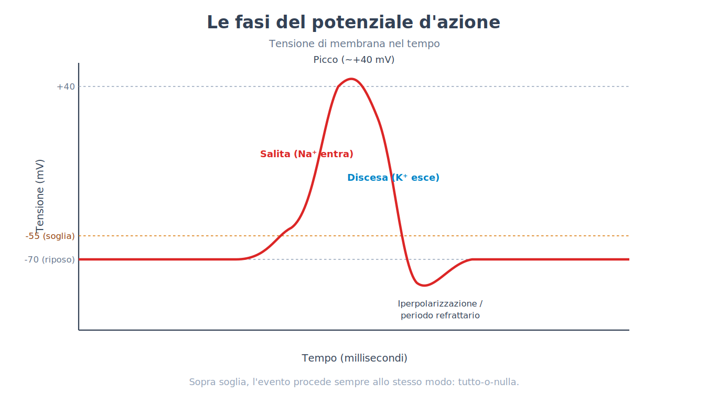
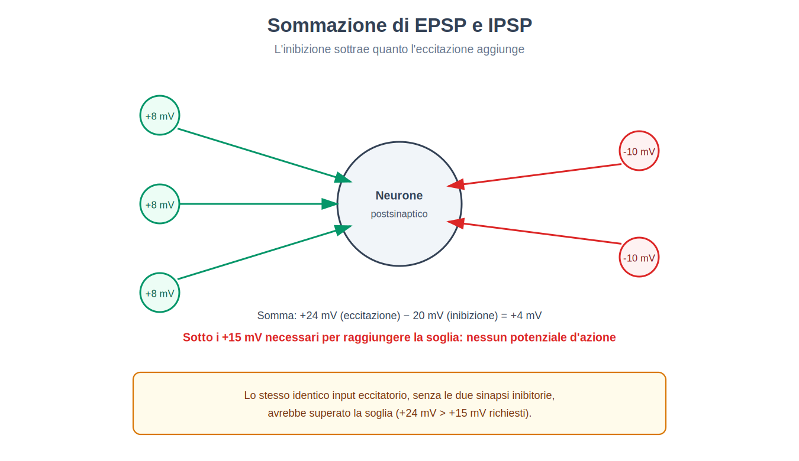
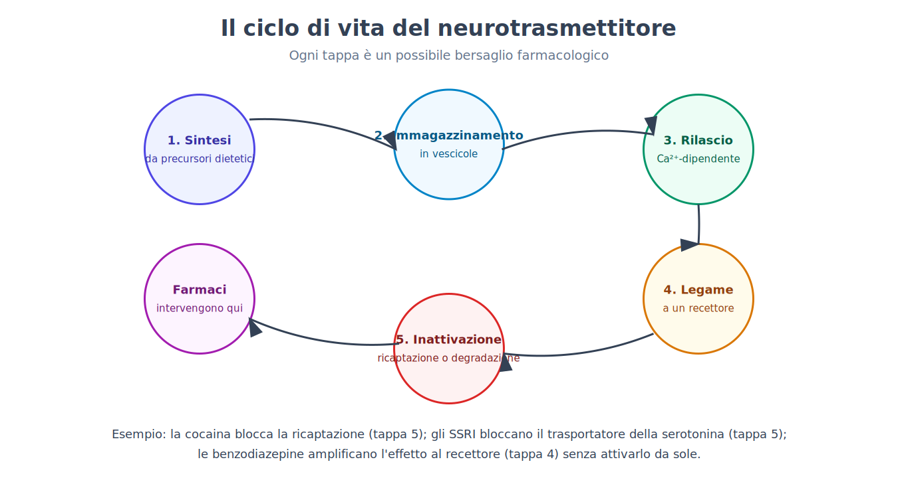
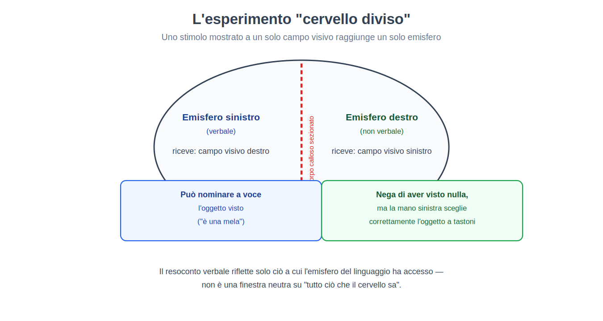
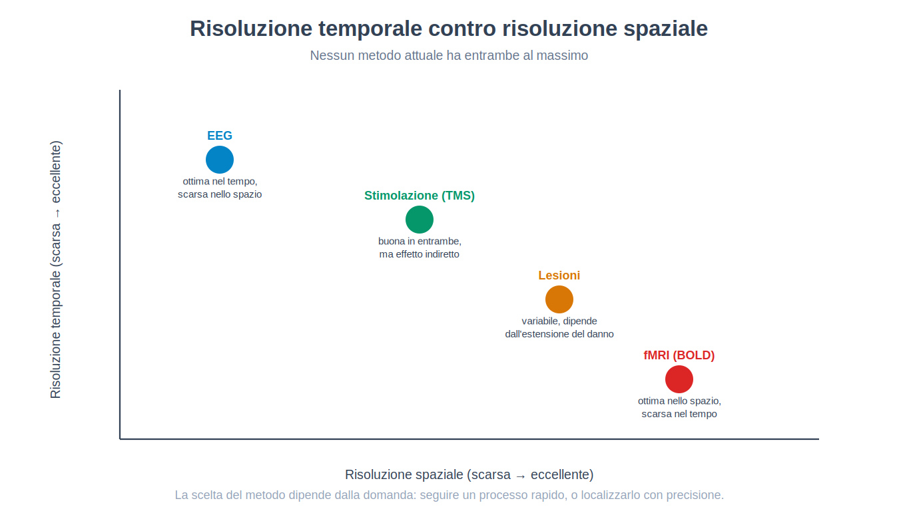
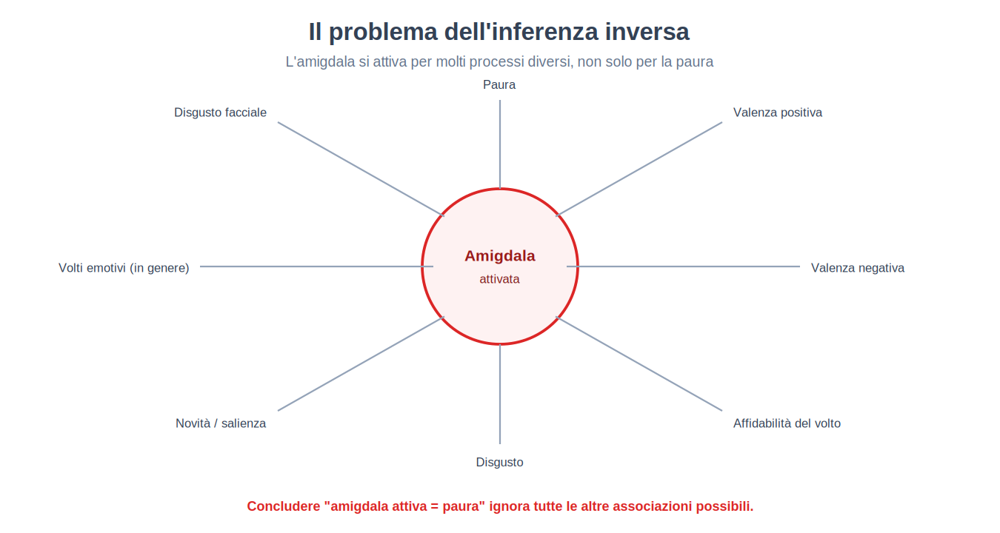
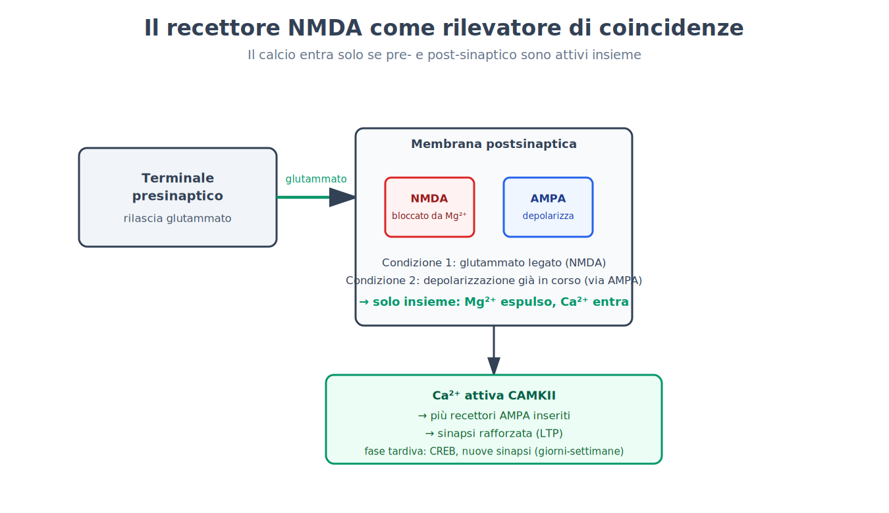
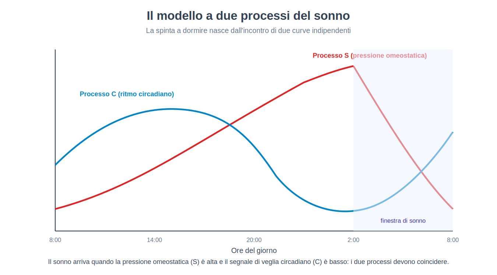
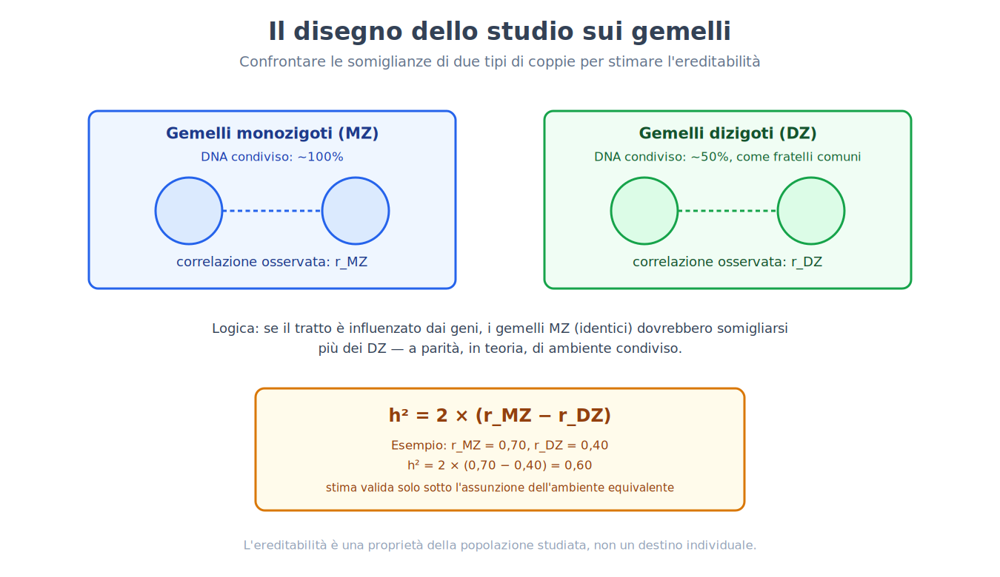

Parte IV. Il substrato: sistema nervoso e comportamento
Capitolo 20 — Il neurone come unità di segnale
[IN DUE PAROLE]
Ogni fenomeno psicologico descritto finora — un ricordo, un'emozione, una decisione — deve, a un certo livello di descrizione, essere implementato da cellule che si scambiano segnali. Questo capitolo espone come una singola cellula nervosa costruisce un segnale elettrico a partire da differenze di concentrazione ionica, perché quel segnale è tutto-o-nulla, e con quale formula si calcola il punto di equilibrio verso cui ogni ione "spinge" la cellula.
Immagina di dover far arrivare un messaggio da un capo all'altro di una stanza usando solo delle porte che si aprono e si chiudono, senza fili elettrici veri e propri. È, in sostanza, il problema che ogni neurone risolve continuamente: non trasporta un segnale elettrico come farebbe un cavo di rame, dove gli elettroni scorrono liberamente lungo tutta la lunghezza. Costruisce invece, punto per punto lungo la sua membrana, un evento elettrico che si rigenera da solo — e per capire come, bisogna partire da un fatto che a prima vista sembra un dettaglio tecnico: dentro e fuori dalla cellula, le concentrazioni di alcuni ioni sono sistematicamente diverse.
Pompe come batterie, canali come interruttori
La membrana di un neurone contiene delle pompe ioniche (ion pumps): proteine che consumano energia (sotto forma di ATP) per spostare ioni contro il loro gradiente di concentrazione — dentro più potassio (K⁺), fuori più sodio (Na⁺), cloro (Cl⁻) e calcio (Ca²⁺). Il risultato è una cellula che, a riposo, contiene molto più K⁺ all'interno che all'esterno, e molto meno Na⁺ all'interno che all'esterno. Queste pompe funzionano come batterie caricate in anticipo: immagazzinano energia sotto forma di un gradiente di concentrazione, pronta per essere rilasciata in un secondo momento.
I canali ionici (ion channels) sono l'interruttore che rilascia quell'energia immagazzinata: quando si aprono, lasciano che uno ione specifico si muova secondo il proprio gradiente — dalla zona a concentrazione più alta a quella più bassa — producendo una corrente elettrica attraverso la membrana. Un canale che si apre per il K⁺ lascia che il potassio esca (portando cariche positive fuori dalla cellula, quindi rendendo l'interno più negativo); un canale che si apre per il Na⁺ lascia che il sodio entri (portando cariche positive dentro, rendendo l'interno più positivo).
Il potenziale di riposo e il potenziale di equilibrio
A riposo, alcuni canali per il K⁺ — chiamati canali di dispersione (leak channels) — restano sempre parzialmente aperti. Il K⁺ tende quindi a uscire dalla cellula seguendo il proprio gradiente di concentrazione. Ma via via che il K⁺ positivo esce, l'interno della cellula diventa sempre più negativo, e questa negatività crescente comincia a "richiamare" indietro il K⁺ positivo per attrazione elettrostatica. A un certo punto, la spinta a uscire (diffusione, dovuta alla concentrazione) e la spinta a rientrare (attrazione elettrostatica, dovuta alla carica) si bilanciano esattamente. La tensione elettrica a cui questo equilibrio si stabilisce per un dato ione si chiama potenziale di equilibrio (equilibrium potential) di quello ione, ed è il valore verso cui quello ione, da solo, "spingerebbe" la membrana se fosse l'unico a poter attraversarla.
[FORMULA]
L'equazione di Nernst permette di calcolare il potenziale di equilibrio di un singolo ione a partire dalle sue concentrazioni dentro e fuori la cellula:
E_ione = (RT / zF) · ln([ione]fuori / [ione]dentro)
Dove:
• E_ione è il potenziale di equilibrio dello ione, espresso in volt (o millivolt).
• R è la costante universale dei gas (8,314 J/(mol·K)) — quanta energia termica è disponibile per mole di sostanza a una data temperatura.
• T è la temperatura assoluta in kelvin (per un organismo a 37 °C, T = 310 K).
• z è la valenza dello ione (la sua carica elettrica: +1 per K⁺ e Na⁺, +2 per Ca²⁺, −1 per Cl⁻).
• F è la costante di Faraday (96 485 coulomb/mol) — la carica elettrica trasportata da una mole di cariche elementari.
• ln è il logaritmo naturale.
• [ione]fuori e [ione]dentro sono le concentrazioni dello ione all'esterno e all'interno della cellula.
A temperatura corporea, il termine RT/F, convertito in millivolt e con il logaritmo naturale riscritto come logaritmo in base 10 (moltiplicando per 2,303), si semplifica in una costante pratica di circa 61,5 mV per uno ione monovalente (z = 1). La formula diventa quindi, per un uso rapido:
E_ione ≈ (61,5 mV / z) · log₁₀([ione]fuori / [ione]dentro)
Esempio di calcolo — il potenziale di equilibrio del potassio. Un valore tipico per un neurone di mammifero è [K⁺]dentro ≈ 140 millimolare (mM) e [K⁺]fuori ≈ 5 mM, con z = +1 (il potassio ha carica singola positiva). Sostituendo:
E_K = 61,5 mV · log₁₀(5 / 140) = 61,5 mV · log₁₀(0,0357) = 61,5 mV · (−1,447) ≈ −89 mV
Questo numero — vicino ai valori di potenziale di riposo effettivamente misurati nei neuroni reali, tipicamente tra −65 e −70 mV — mostra perché il potenziale di riposo è dominato dal potassio: se i canali di dispersione per il K⁺ fossero gli unici canali aperti a riposo, la cellula si stabilizzerebbe quasi esattamente su questo valore. Il fatto che il potenziale di riposo reale (circa −70 mV) sia leggermente meno negativo di −89 mV indica che anche una piccola quantità di Na⁺ filtra continuamente dentro la cellula, spostando il bilancio verso valori un poco più positivi — coerente con il fatto che il potenziale di equilibrio del Na⁺, calcolato con le sue concentrazioni tipiche ([Na⁺]fuori ≈ 145 mM, [Na⁺]dentro ≈ 15 mM), risulta positivo: E_Na = 61,5 mV · log₁₀(145/15) ≈ +61 mV — molto lontano dal potenziale di riposo, e proprio per questo capace di produrre un cambiamento drammatico quando i canali per il Na⁺ si aprono in massa, come nel prossimo paragrafo.

Il potenziale d'azione: un evento tutto-o-nulla
Quando la tensione della membrana, per effetto di segnali in arrivo (descritti nel prossimo capitolo), raggiunge una soglia (threshold) — tipicamente attorno ai −55 mV — si innesca un evento completamente diverso da tutto ciò che è successo finora: il potenziale d'azione (action potential). La sequenza è la seguente.
I canali del sodio voltaggio-dipendenti (voltage-gated sodium channels) — canali che si aprono non in risposta a una sostanza chimica, ma in risposta al voltaggio stesso della membrana — si aprono in massa. Il Na⁺, spinto sia dal proprio gradiente di concentrazione sia ora dall'attrazione elettrostatica (l'interno è negativo, il sodio è positivo), si riversa dentro la cellula. Questo produce un meccanismo di retroazione positiva: più Na⁺ entra, più la membrana si depolarizza (diventa positiva); più si depolarizza, più canali del sodio si aprono. È proprio questa retroazione a rendere il potenziale d'azione un evento tutto-o-nulla (all-or-none): una volta superata la soglia, l'evento procede fino al suo massimo indipendentemente da quanto lo stimolo iniziale fosse appena sopra o molto sopra la soglia — non esiste un potenziale d'azione "a metà".
La fase di salita si ferma quando i canali del sodio si inattivano (un meccanismo distinto dalla chiusura: il canale smette di rispondere anche se il voltaggio resterebbe favorevole) e, contemporaneamente, si aprono i canali del potassio voltaggio-dipendenti, più lenti ad attivarsi. Il K⁺ esce, riportando la membrana verso valori negativi (fase di discesa) e spesso oltre il potenziale di riposo originario, in un breve periodo refrattario durante il quale un nuovo potenziale d'azione è più difficile o impossibile da generare. Questo periodo refrattario impedisce che il segnale torni indietro su se stesso, garantendo che si propaghi in una sola direzione lungo l'assone.

[ATTENZIONE AL SALTO]
È facile immaginare il potenziale d'azione come una corrente elettrica che "scorre" lungo l'assone, nello stesso modo in cui l'elettricità scorre in un cavo. Non è così: il potenziale d'azione generato in un punto della membrana depolarizza leggermente il tratto di membrana adiacente, portandolo a sua volta sopra soglia e innescando lì un potenziale d'azione completamente nuovo, con la stessa ampiezza del primo. Il segnale non si sposta: si rigenera, punto dopo punto, lungo tutto il percorso — motivo per cui non si indebolisce con la distanza, a differenza di un segnale elettrico passivo che si attenua progressivamente.
La velocità di conduzione e la mielina
Questa rigenerazione punto per punto ha un costo: è più lenta di una corrente elettrica passiva. Molti assoni sono avvolti da un isolante, la mielina (myelin), prodotta da cellule gliali specializzate, che riduce la dispersione di corrente attraverso la membrana nei tratti isolati. Il potenziale d'azione, invece di rigenerarsi con continuità, "salta" da un'interruzione della mielina all'altra — un meccanismo chiamato conduzione saltatoria (saltatory conduction) — aumentando sensibilmente la velocità di trasmissione senza dover aumentare il diametro dell'assone, che è l'altra variabile che influenza la velocità (assoni più larghi offrono meno resistenza).
[IL DISEGNO DELL'ESPERIMENTO]
Il problema. Fino a metà del Novecento non esisteva un modo di misurare direttamente che cosa cambiasse elettricamente attraverso la membrana di un singolo neurone durante un potenziale d'azione: gli strumenti dell'epoca non erano abbastanza precisi né abbastanza veloci.
La soluzione tecnica. I ricercatori (Hodgkin e Huxley, primi anni Cinquanta, che usarono una tecnica messa a punto da Cole e Marmont alla fine degli anni Quaranta) individuarono l'assone gigante del calamaro — largo fino a un millimetro di diametro, enormemente più grande di un assone di mammifero — come modello sperimentale: abbastanza grande da poter inserire al suo interno un elettrodo e misurare direttamente la tensione attraverso la membrana. Con la tecnica del voltage clamp (morsetto di voltaggio), il potenziale di membrana viene tenuto artificialmente fisso a un valore scelto dallo sperimentatore, mentre si misura la corrente che la cellula genera per opporsi a quel valore imposto — una misura indiretta, ma precisa, di quali canali ionici si stiano aprendo e in quale sequenza.
Il risultato. Imponendo diversi livelli di voltaggio e misurando le correnti risultanti, fu possibile separare per la prima volta il contributo del Na⁺ (corrente rapida, verso l'interno) da quello del K⁺ (corrente più lenta, verso l'esterno), e descrivere matematicamente l'intera sequenza del potenziale d'azione — apertura, inattivazione, periodo refrattario — con equazioni capaci di prevedere correttamente la forma e la velocità del segnale osservato.
Perché conta ancora oggi. Il modello costruito con questa tecnica resta, nella sua sostanza, il modello standard con cui si descrive il potenziale d'azione in qualunque neurone, umano incluso: un caso in cui un organismo scelto per pura convenienza tecnica (un calamaro, non un mammifero) ha rivelato un meccanismo condiviso da specie enormemente diverse.
[CONVINZIONE DIFFUSA]
Pensare al sistema nervoso come a un impianto elettrico — segnali che "corrono" lungo fili, in analogia con la corrente elettrica domestica — è un'immagine utile ma fuorviante su almeno due punti: primo, il segnale non è una corrente passiva ma un evento chimico-elettrico che si rigenera; secondo, senza le pompe ioniche che caricano continuamente i gradienti di concentrazione (un processo lento, che consuma energia metabolica) non ci sarebbe alcun segnale da propagare, per quanto sofisticato fosse il resto del circuito. Le pompe non sono un dettaglio di manutenzione: sono la precondizione di ogni segnale.
[MINI-CRONOLOGIA]
L'ipotesi che la membrana cellulare, selettivamente permeabile agli ioni, fosse la sede del segnale elettrico nervoso risale ai primi del Novecento. La tecnica del voltage clamp, sviluppata da Cole e Marmont alla fine degli anni Quaranta, fu usata da Hodgkin e Huxley per la caratterizzazione completa delle correnti ioniche del potenziale d'azione sull'assone gigante di calamaro, pubblicata nei primi anni Cinquanta. Il principio si è poi rivelato conservato, con variazioni di dettaglio, in tutto il regno animale — dai moscerini della frutta ai mammiferi.
[IL PUNTO CHIAVE DEL CAPITOLO]
• Le pompe ioniche costruiscono gradienti di concentrazione consumando energia; i canali ionici li sfruttano lasciando fluire correnti verso il potenziale di equilibrio di ciascuno ione.
• Il potenziale di equilibrio di uno ione si calcola con l'equazione di Nernst; per il K⁺, con concentrazioni tipiche, risulta circa −89 mV, vicino al potenziale di riposo reale (circa −70 mV), perché il potassio ne è il principale responsabile.
• Il potenziale d'azione è un evento tutto-o-nulla: sopra soglia, l'apertura in massa dei canali del sodio innesca una retroazione positiva indipendente dall'intensità dello stimolo iniziale.
• La conduzione saltatoria lungo tratti mielinizzati aumenta la velocità di trasmissione senza richiedere assoni più larghi.
• Il modello standard del potenziale d'azione fu costruito con la tecnica del voltage clamp sull'assone gigante di calamaro, e si è rivelato generalizzabile a specie molto diverse, uomo incluso.
Capitolo 21 — La sinapsi
[IN DUE PAROLE]
Un potenziale d'azione che raggiunge la fine di un assone deve attraversare uno spazio fisico che lo separa dal neurone successivo: la sinapsi. Questo capitolo espone come un segnale elettrico si trasforma in segnale chimico e poi di nuovo in segnale elettrico, perché la maggior parte delle sinapsi non trasmettono un "sì" o un "no" ma un contributo graduale che si somma ad altri contributi, e perché l'inibizione è, in questo bilancio, importante quanto l'eccitazione.
Dal segnale elettrico al segnale chimico e ritorno
Alla terminazione di un assone, il potenziale d'azione in arrivo apre canali del calcio voltaggio-dipendenti. Il Ca²⁺ che entra innesca la fusione di piccole vescicole contenenti neurotrasmettitore (neurotransmitter) con la membrana presinaptica, rilasciandone il contenuto nello spazio sinaptico — un processo chiamato esocitosi (exocytosis). Il neurotrasmettitore diffonde attraverso quello spazio (largo circa venti nanometri) e si lega a recettori (receptors) specifici sulla membrana della cellula successiva (postsinaptica).
Questo legame apre canali ionici sulla membrana postsinaptica, producendo un potenziale postsinaptico (postsynaptic potential) — un piccolo cambiamento locale e graduale del voltaggio, molto diverso dal potenziale d'azione tutto-o-nulla del capitolo precedente. Se il canale aperto lascia entrare cariche positive (tipicamente Na⁺ o Ca²⁺), il potenziale postsinaptico è eccitatorio (EPSP, excitatory postsynaptic potential): avvicina la cellula alla soglia. Se il canale lascia entrare cariche negative (tipicamente Cl⁻) o uscire cariche positive, il potenziale postsinaptico è inibitorio (IPSP, inhibitory postsynaptic potential): allontana la cellula dalla soglia.
Il neurotrasmettitore, una volta legato, viene poi rimosso dallo spazio sinaptico — per ricaptazione (reuptake) da parte del neurone che lo ha rilasciato, o per degradazione enzimatica — così che il segnale non resti attivo indefinitamente. Questo intero percorso — sintesi, immagazzinamento in vescicole, rilascio calcio-dipendente, legame recettoriale, inattivazione — è, come vedremo nel prossimo capitolo, la mappa completa dei punti su cui un farmaco psicoattivo può intervenire.
Sommazione: perché la cellula non risponde a un solo impulso
Un singolo EPSP è quasi sempre troppo piccolo, da solo, per portare la cellula postsinaptica alla soglia del potenziale d'azione. Ogni neurone riceve invece migliaia di sinapsi contemporaneamente, alcune eccitatorie e alcune inibitorie, e la cellula "decide" se generare un potenziale d'azione sommando algebricamente tutti questi contributi in un dato momento e in un dato punto — un processo chiamato sommazione (summation), che può essere spaziale (input simultanei da sinapsi diverse) o temporale (input ravvicinati nel tempo dalla stessa sinapsi, che si sovrappongono prima di esaurirsi).
[NUMERI]
Un esempio numerico semplificato, puramente illustrativo, aiuta a vedere il principio in azione. Supponi che il potenziale di riposo di un neurone sia −70 mV e la soglia sia −55 mV, quindi serve un cambiamento netto di +15 mV per generare un potenziale d'azione. Se tre sinapsi eccitatorie si attivano quasi simultaneamente, ciascuna producendo un EPSP di +8 mV, il loro contributo sommato è +24 mV — sufficiente, da solo, a superare la soglia. Ma se nello stesso istante si attivano anche due sinapsi inibitorie, ciascuna producendo un IPSP di −10 mV, il contributo inibitorio sottrae 20 mV: il totale netto è +24 − 20 = +4 mV, ben al di sotto dei +15 mV necessari. Lo stesso identico input eccitatorio, in presenza di un'inibizione sufficiente, non produce alcun potenziale d'azione. Questo esempio, per quanto semplificato rispetto alla realtà biofisica (dove la posizione delle sinapsi sul dendrite, la loro distanza dal punto di innesco e la loro tempistica esatta contano quanto la loro quantità), mostra perché l'inibizione non è un semplice "meno" rispetto all'eccitazione, ma una componente del calcolo altrettanto determinante.

Ionotropico contro metabotropico
Non tutti i recettori funzionano allo stesso modo. I recettori ionotropici (ionotropic receptors) sono essi stessi canali ionici: il legame del neurotrasmettitore apre direttamente il canale, producendo un effetto rapido (dell'ordine del millisecondo) e diretto. I recettori metabotropici (metabotropic receptors, spesso accoppiati a proteine G) non sono canali: il legame del neurotrasmettitore attiva una cascata di secondi messaggeri all'interno della cellula, che può a sua volta aprire canali situati altrove, modificare l'espressione genica, o produrre effetti più lenti (secondi o minuti) ma spesso più duraturi e più ampiamente distribuiti nella cellula. La stessa sostanza chimica può quindi produrre effetti molto diversi a seconda di quale tipo di recettore incontra — un punto che tornerà centrale nel prossimo capitolo, quando la stessa domanda si porrà per interi farmaci.
Un'eccezione a tutto questo meccanismo chimico esiste: la sinapsi elettrica (electrical synapse), in cui due cellule sono collegate direttamente da canali proteici chiamati connessoni (connexons), che permettono alla corrente ionica di passare fisicamente da una cellula all'altra senza alcun intermediario chimico. È più rapida della sinapsi chimica ma anche più rigida: non permette l'amplificazione, l'inibizione o la plasticità che la sinapsi chimica rende possibili, e per questo resta relativamente rara nel sistema nervoso dei mammiferi adulti, più diffusa in circuiti che richiedono sincronizzazione immediata tra molte cellule.
[IL DISEGNO DELL'ESPERIMENTO]
Il problema. All'inizio del Novecento non era chiaro se la trasmissione tra un nervo e un organo bersaglio (per esempio il cuore) fosse un fenomeno puramente elettrico — la corrente che "salta" direttamente da una cellula all'altra — o se implicasse il rilascio di una sostanza chimica intermedia.
Il disegno. Due cuori di rana isolati furono mantenuti in funzione in due contenitori separati, ciascuno bagnato dal proprio liquido fisiologico, ma collegati in modo che il liquido del primo cuore potesse essere trasferito al secondo. Il nervo vago del primo cuore — che ne rallenta il battito quando stimolato — venne stimolato elettricamente, e il battito del primo cuore rallentò come atteso. Il liquido che bagnava quel primo cuore fu quindi trasferito al secondo contenitore, senza alcuna connessione elettrica o nervosa diretta tra i due cuori.
Il risultato. Anche il secondo cuore, isolato e mai stimolato direttamente, rallentò il battito non appena ricevette il liquido del primo. L'unica spiegazione compatibile era che la stimolazione del nervo vago avesse rilasciato, nel liquido, una sostanza chimica capace da sola di produrre l'effetto — battezzata all'epoca "sostanza vago" e poi identificata come acetilcolina.
Perché è un esperimento fondativo. Questo esperimento (Loewi, 1921) dimostrò, con un disegno semplice e concludente, che la comunicazione tra sistema nervoso e organo bersaglio può essere chimica e non solo elettrica — la prima dimostrazione sperimentale dell'esistenza di un neurotrasmettitore, alla base di tutto il capitolo successivo su neurotrasmettitori e farmaci.
[QUESTIONE CONTROVERSA]
È diffusa la scorciatoia concettuale per cui l'eccitazione "accende" i circuiti e l'inibizione li "spegne", come se l'inibizione fosse una funzione secondaria o di sicurezza. La ricerca sul cosiddetto equilibrio eccitazione/inibizione (E/I) mostra invece che l'inibizione è costitutiva del calcolo stesso: definisce quali segnali passano, sincronizza l'attività di popolazioni di neuroni in ritmi funzionalmente rilevanti, e la sua alterazione (più che un semplice eccesso di eccitazione) è implicata in condizioni cliniche eterogenee, dall'epilessia a certi disturbi dello sviluppo. Trattare l'inibizione come un semplice freno, anziché come un ingrediente attivo del segnale, sottostima quanto lavoro computazionale la rete nervosa svolga sottraendo, non solo sommando.
[IL PUNTO CHIAVE DEL CAPITOLO]
• Alla sinapsi chimica, il segnale elettrico si converte in segnale chimico (neurotrasmettitore rilasciato) e poi di nuovo in segnale elettrico (potenziale postsinaptico) nella cellula successiva.
• L'esperimento dei due cuori di rana dimostrò per primo che questa trasmissione può essere chimica, non solo elettrica.
• I potenziali postsinaptici sono graduati, non tutto-o-nulla, e si sommano spazialmente e temporalmente: un neurone "decide" sulla base del bilancio netto tra EPSP e IPSP.
• I recettori ionotropici agiscono in millisecondi aprendo direttamente un canale; i recettori metabotropici agiscono più lentamente tramite cascate di secondi messaggeri.
• L'inibizione non è un semplice freno: è parte attiva del calcolo che ogni rete di neuroni svolge.
Capitolo 22 — Neurotrasmettitori e psicofarmacologia
[IN DUE PAROLE]
Il capitolo precedente ha descritto il ciclo di vita di un neurotrasmettitore in generale: sintesi, immagazzinamento, rilascio, legame, inattivazione. Questo capitolo applica quella mappa ai principali sistemi di neurotrasmettitori conosciuti e a come i farmaci psicoattivi intervengono su ciascuna delle sue tappe — e affronta direttamente perché la formula "squilibrio chimico", spesso usata per spiegare la depressione al pubblico, è una semplificazione che i dati non sostengono nella sua forma più diffusa.
I principali sistemi di neurotrasmettitori
Un piccolo numero di famiglie di neurotrasmettitori implementa la grandissima maggioranza della comunicazione nel sistema nervoso.
| Neurotrasmettitore | Precursore | Funzione prevalente in questo libro |
|---|---|---|
| Glutammato | glutammina | Eccitazione rapida; base della plasticità sinaptica (capitolo 25) |
| GABA | glutammato (via un enzima dedicato) | Inibizione rapida; bersaglio delle benzodiazepine |
| Dopamina | tirosina | Ricompensa e motivazione (capitolo 52); controllo motorio |
| Noradrenalina | tirosina, a valle della dopamina | Arousal, risposta allo stress |
| Serotonina | triptofano | Umore; bersaglio dei farmaci antidepressivi più diffusi |
| Acetilcolina | colina | Giunzione neuromuscolare; arousal corticale |
| Endocannabinoidi | lipidi di membrana | Segnalazione retrograda, prodotta su richiesta, non immagazzinata in vescicole |
Un punto che vale la pena isolare: la funzione di un neurotrasmettitore non è una proprietà fissa della molecola, ma dipende dalla regione cerebrale, dal tipo di recettore a cui si lega e dal circuito in cui è inserito. La stessa dopamina che nel circuito della ricompensa segnala una discrepanza tra risultato atteso e ottenuto (l'errore di predizione già incontrato, con formula diversa, nel condizionamento classico del capitolo 15) è coinvolta, in un circuito motorio distinto, nella fluidità del movimento volontario — la cui compromissione produce i sintomi motori del Parkinson.
Come agisce un farmaco: due domande indipendenti
Se un farmaco produce un certo effetto dipende da due fattori logicamente separabili. La farmacocinetica (pharmacokinetics) riguarda quanto farmaco arriva effettivamente al bersaglio: assorbimento, distribuzione, metabolismo, eliminazione. La via di somministrazione conta enormemente — una sostanza iniettata direttamente in vena raggiunge concentrazioni plasmatiche elevate in circa un minuto, mentre la stessa sostanza assunta per via orale viene in parte degradata dal fegato prima ancora di entrare in circolo (metabolismo di primo passaggio), riducendo la frazione che raggiunge il cervello. La farmacodinamica (pharmacodynamics) riguarda invece che cosa il farmaco fa una volta arrivato al bersaglio: un agonista (agonist) attiva il recettore imitando il neurotrasmettitore naturale; un antagonista (antagonist) blocca il recettore senza attivarlo, impedendo al neurotrasmettitore naturale di legarsi; un agonista parziale (partial agonist) attiva il recettore ma con un effetto massimo inferiore rispetto a un agonista pieno, anche a dosi elevate — una proprietà usata deliberatamente in farmaci pensati per limitare il rischio di overdose.
Una categoria distinta merita attenzione perché è controintuitiva: il modulatore allosterico positivo (positive allosteric modulator) non si lega allo stesso sito del neurotrasmettitore naturale e non ha, da solo, alcun effetto misurabile — amplifica soltanto l'effetto del neurotrasmettitore quando questo è già presente. Le benzodiazepine (una classe di farmaci ansiolitici) funzionano esattamente così sul recettore GABA-A: non attivano il recettore in assenza di GABA, ma fanno sì che il canale, quando il GABA si lega, si apra più spesso del normale.

[CONVINZIONE DIFFUSA]
È diffusa l'idea che la depressione sia causata da uno "squilibrio chimico", tipicamente descritto come un livello troppo basso di serotonina — un'idea nota come ipotesi monoaminergica della depressione (monoamine hypothesis of depression). L'ipotesi nacque da un'osservazione indiretta: i farmaci che aumentano la disponibilità di serotonina o noradrenalina nello spazio sinaptico (come gli inibitori selettivi della ricaptazione della serotonina, SSRI) alleviano spesso i sintomi depressivi. Ma un'efficacia terapeutica non dimostra automaticamente il meccanismo causale della malattia: un antidolorifico che funziona non implica che il dolore sia causato da una carenza di quel farmaco. Una revisione ombrello pubblicata nel 2022 (Moncrieff e colleghi) ha esaminato sistematicamente le evidenze dirette — livelli di serotonina e dei suoi metaboliti, densità e sensibilità dei recettori, varianti genetiche del trasportatore della serotonina — e non ha trovato un supporto consistente all'idea che la depressione sia associata, in modo affidabile, a una serotonina più bassa. Un altro dato è difficile da conciliare con la versione più semplice dell'ipotesi: la deplezione sperimentale di triptofano (il precursore della serotonina) in persone sane non produce depressione, ma la peggiora in chi è già in remissione da un episodio precedente — un effetto specifico, non generale, incompatibile con un meccanismo "più serotonina, meno depressione" applicabile a chiunque.
[REGGE ANCORA?]
Che cosa resta, allora, dell'ipotesi monoaminergica? Gli SSRI restano farmaci efficaci per una parte consistente delle persone con depressione — ma circa la metà dei pazienti non risponde al primo antidepressivo (nello studio STAR*D, risposta intorno al 47% e remissione intorno al 30%), e diversi farmaci antidepressivi efficaci (come la ketamina, che agisce sul glutammato, non sulla serotonina) non condividono affatto il meccanismo monoaminergico. Un modello alternativo, complementare più che sostitutivo, propone che lo stress cronico induca un'atrofia di circuiti limbici e una riduzione del fattore neurotrofico derivato dal cervello (BDNF, brain-derived neurotrophic factor) — una proteina che sostiene la sopravvivenza e la plasticità dei neuroni — e che gli antidepressivi cronici agiscano aumentando questo fattore, un effetto più lento (settimane) e più coerente con il ritardo terapeutico osservato clinicamente rispetto a un semplice aumento acuto di serotonina. Il giudizio più onesto, a oggi, è che l'ipotesi monoaminergica nella sua forma originaria — "la depressione è causata da poca serotonina" — non è sostenuta dalle evidenze dirette, mentre l'efficacia clinica di alcuni farmaci che agiscono su quei sistemi resta un dato solido, da spiegare con meccanismi più complessi e ancora in parte da chiarire.
[NUMERI]
Circa la metà delle persone con depressione maggiore non risponde al primo antidepressivo (nello studio STAR*D con citalopram, un SSRI: risposta intorno al 47%, remissione intorno al 30%), e una parte non risponde nemmeno ai tentativi successivi — una risposta così eterogenea rende poco plausibile un meccanismo unico e universale, ma da sola non lo esclude.
[IL DISEGNO DELL'ESPERIMENTO]
Il problema da spiegare. La ketamina è, farmacologicamente, un antagonista del recettore NMDA — un recettore eccitatorio al glutammato. Bloccare un recettore eccitatorio dovrebbe, intuitivamente, ridurre l'attività eccitatoria complessiva. Eppure la ketamina produce un effetto antidepressivo rapido (entro 24 ore, contro le 2-3 settimane tipiche degli SSRI) associato a un aumento, non una riduzione, della trasmissione glutammatergica.
La spiegazione proposta. I recettori NMDA presi di mira dalla ketamina si trovano in parte sui terminali di interneuroni inibitori GABAergici, la cui normale attivazione frena il rilascio di glutammato dai neuroni eccitatori vicini. Bloccando l'NMDA su quegli interneuroni inibitori, la ketamina toglie loro il freno che li attiverebbe — l'interneurone smette di rilasciare GABA, il neurone eccitatorio che stava frenando si libera dall'inibizione e rilascia più glutammato del normale, che a sua volta attiva fortemente i recettori AMPA postsinaptici. È un doppio negativo: bloccare un recettore eccitatorio su una cellula inibitoria produce, a valle, più eccitazione, non meno.
Perché conta. L'attivazione di AMPA che ne risulta innesca cascate di plasticità sinaptica (imparentate con il meccanismo del capitolo 25) che secondo una delle ipotesi più discusse sarebbero il motore dell'effetto antidepressivo — non l'esperienza soggettiva dissociativa che la ketamina produce a dosi più alte, che è invece un effetto collaterale distinto. La cinetica stessa conferma che il meccanismo è diverso da quello degli SSRI: un'unica somministrazione allevia i sintomi entro un giorno, un tempo incompatibile con qualunque spiegazione basata su un semplice aumento della serotonina.
[IL PUNTO CHIAVE DEL CAPITOLO]
• Il ciclo di vita di un neurotrasmettitore (sintesi, immagazzinamento, rilascio, legame, inattivazione) è anche la mappa di tutti i punti in cui un farmaco può intervenire.
• Agonisti, antagonisti, agonisti parziali e modulatori allosterici positivi rappresentano modi logicamente distinti di intervenire su un recettore.
• L'ipotesi che la depressione sia causata da un semplice deficit di serotonina non è sostenuta dalle evidenze dirette (Moncrieff e colleghi, 2022), pur restando gli SSRI farmaci efficaci per una parte consistente dei pazienti.
• Il meccanismo della ketamina — un antagonista che aumenta l'eccitazione disinibendo un circuito — mostra come un farmaco possa produrre l'effetto opposto a quello intuitivo a partire dal suo bersaglio molecolare diretto.
Capitolo 23 — Architettura del cervello
[IN DUE PAROLE]
Dopo aver descritto come un singolo neurone genera un segnale e come lo trasmette a un altro, questo capitolo sale di livello: come sono organizzate, nel loro insieme, le centinaia di regioni che compongono il sistema nervoso, che cosa significa che i due emisferi non sono identici nelle loro funzioni, e perché la frase "l'area del cervello per X" nasconde più di quanto riveli.
Un'organizzazione che nasce dallo sviluppo
Il sistema nervoso si divide, alla prima approssimazione più grossolana, in sistema nervoso centrale (encefalo e midollo spinale) e sistema nervoso periferico (tutto il resto — nervi che collegano il centro alla periferia). Il sistema nervoso periferico si divide a sua volta in una componente somatica (volontaria, verso i muscoli scheletrici) e una componente autonoma (involontaria, verso organi interni), e quest'ultima in un ramo simpatico (mobilitazione, "lotta o fuga"), uno parasimpatico (recupero, "riposo e digestione") e uno enterico (controllo autonomo dell'intestino).
L'encefalo stesso non è organizzato a caso: la sua struttura adulta rispecchia da vicino tre divisioni presenti già nell'embrione — che daranno origine, con lo sviluppo, a cinque regioni principali. Questo non è un dettaglio embriologico fine a se stesso: usare lo sviluppo come mappa aiuta a orientarsi nell'anatomia adulta molto più di un elenco arbitrario di nomi latini, perché regioni vicine nello sviluppo tendono a restare interconnesse e funzionalmente imparentate nell'adulto.
A livello di tessuto, la sostanza grigia (gray matter) è composta da corpi cellulari, dendriti e assoni non mielinizzati — dove avviene la maggior parte dell'elaborazione locale; la sostanza bianca (white matter), il cui colore chiaro deriva dalla mielina, è composta da fasci di assoni mielinizzati che collegano regioni diverse — le "autostrade" di comunicazione a lunga distanza del sistema nervoso.
Corteccia e sottocorteccia
La corteccia cerebrale (cerebral cortex), lo strato più esterno e più recente in termini evolutivi, è organizzata in lobi (frontale, parietale, temporale, occipitale) associati, in modo approssimativo più che netto, a funzioni diverse: pianificazione e controllo motorio nel lobo frontale, elaborazione somatosensoriale e spaziale nel parietale, elaborazione uditiva e riconoscimento complesso nel temporale, elaborazione visiva nell'occipitale. Sotto la corteccia si trovano strutture più antiche dal punto di vista evolutivo — tra queste, strutture che ricorreranno più volte nei prossimi capitoli: il talamo (stazione di transito quasi obbligata per l'informazione sensoriale diretta alla corteccia), l'ippocampo (centrale per la memoria, trattato per intero nella Parte VI), l'amigdala (centrale per l'apprendimento emotivo, trattata per intero nella Parte VIII) e i gangli della base (centrali per la selezione e l'avvio del movimento volontario).
Lateralizzazione: due emisferi, non due menti separate
I due emisferi cerebrali, pur apparendo quasi speculari nella loro forma, non sono funzionalmente identici — un fenomeno chiamato lateralizzazione (lateralization). L'esempio più noto riguarda il linguaggio, tipicamente più dipendente dall'emisfero sinistro nella grande maggioranza delle persone destrimani. Ma la lateralizzazione è una questione di grado e di specializzazione relativa, non di esclusività assoluta: entrambi gli emisferi partecipano quasi sempre a qualunque compito complesso, sia pure con contributi diversi.
[IL DISEGNO DELL'ESPERIMENTO]
Il contesto clinico. In alcuni casi di epilessia grave e resistente ai farmaci, veniva praticato un intervento chirurgico che sezionava il corpo calloso (corpus callosum) — il grande fascio di sostanza bianca che collega i due emisferi — per impedire che le scariche epilettiche si propagassero da un emisfero all'altro. Questo produceva pazienti con i due emisferi funzionalmente scollegati tra loro, pur restando entrambi intatti e funzionanti singolarmente: i cosiddetti pazienti "cervello diviso" (split-brain).
Il disegno sperimentale. Sfruttando l'organizzazione anatomica per cui ciascun campo visivo proietta principalmente all'emisfero opposto, i ricercatori (Sperry e Gazzaniga, tra gli anni Sessanta e Settanta) presentarono immagini o parole molto brevemente a un solo lato del campo visivo di questi pazienti, in modo che l'informazione raggiungesse un solo emisfero senza poter attraversare il corpo calloso sezionato per raggiungere l'altro.
Il risultato. Quando l'immagine veniva mostrata al campo visivo che proiettava all'emisfero sinistro (tipicamente dominante per il linguaggio), il paziente poteva nominarla verbalmente senza difficoltà. Quando la stessa immagine veniva mostrata al campo visivo che proiettava all'emisfero destro, il paziente negava spesso di aver visto qualcosa — ma la mano sinistra (controllata dall'emisfero destro) poteva correttamente selezionare a tastoni, dietro uno schermo, l'oggetto corrispondente all'immagine, pur restando il paziente incapace di dire a voce quale oggetto avesse scelto e perché.
Perché conta. Questo doppio risultato — l'emisfero destro "sa" qualcosa che l'emisfero sinistro verbale non può riferire — dimostrò che i due emisferi possono elaborare informazioni ed eseguire compiti in parallelo e in modo relativamente indipendente, e che il linguaggio verbale non è un accesso neutro a "tutto ciò che il cervello sa": è l'output di un solo emisfero, che in queste condizioni sperimentali non ha accesso diretto a ciò che l'altro emisfero elabora.

[CONVINZIONE DIFFUSA]
Espressioni come "l'area del cervello per il linguaggio" o "l'area per la paura" sono comode ma ingannevoli se prese alla lettera. Quasi nessuna funzione psicologica complessa dipende da una singola regione in modo esclusivo: la stessa funzione è tipicamente supportata da più regioni che cooperano (un principio chiamato degenerazione funzionale, nel senso tecnico di ridondanza distribuita, non nel senso comune del termine), e la stessa regione partecipa tipicamente a più funzioni diverse a seconda del contesto e delle connessioni attive in quel momento. Questo spiega perché lesioni anche estese possano lasciare capacità sorprendentemente intatte (il cervello ha spesso vie alternative) e perché lesioni piccole ma in punti strategici possano avere effetti sproporzionati. Una diceria correlata e ancora più netta — "usiamo solo il 10% del cervello" — è semplicemente falsa: le tecniche di neuroimmagine del capitolo 24 mostrano attività distribuita, in momenti diversi, in praticamente tutte le regioni cerebrali nell'arco di una giornata normale; nessuna area resta permanentemente inattiva.
[IL PUNTO CHIAVE DEL CAPITOLO]
• L'organizzazione del sistema nervoso, dal centrale al periferico, riflette in larga parte la sua origine nello sviluppo embrionale.
• Corteccia e sottocorteccia contribuiscono in modo diverso: la corteccia per elaborazioni più recenti evolutivamente e specializzate per lobo, le strutture sottocorticali o del sistema limbico (talamo, ippocampo, amigdala, gangli della base) per funzioni più antiche e altrettanto essenziali.
• Gli esperimenti sui pazienti "cervello diviso" hanno dimostrato che i due emisferi possono elaborare informazioni indipendentemente, e che il resoconto verbale riflette solo ciò a cui l'emisfero del linguaggio ha accesso.
• "L'area per X" è una scorciatoia utile ma imprecisa: la funzione è quasi sempre distribuita e ridondante, non localizzata in modo esclusivo.
Capitolo 24 — Come si guarda dentro un cervello che funziona
[IN DUE PAROLE]
Come si fa a sapere che cosa fa il cervello mentre pensa, senza poterlo aprire? Questo capitolo espone i principali metodi — lesioni, stimolazione, elettroencefalogramma, risonanza magnetica funzionale — con le rispettive risoluzioni temporali e spaziali, e affronta un problema logico che attraversa gran parte della ricerca con neuroimmagine: dedurre a ritroso, da un'attivazione osservata, quale processo psicologico l'abbia causata è un'inferenza molto più fragile di quanto sembri.
Quattro finestre diverse sullo stesso oggetto
Nessun metodo disponibile oggi osserva direttamente "il pensiero". Ogni metodo osserva una traccia indiretta — elettrica, magnetica, metabolica — e ciascuno lo fa con un compromesso diverso tra due proprietà che raramente coesistono nello stesso strumento: la risoluzione temporale (quanto rapidamente si può seguire un cambiamento) e la risoluzione spaziale (quanto precisamente si può localizzare dove avviene).
Lo studio delle lesioni — naturali (ictus, traumi) o, in animali, indotte sperimentalmente — mostra quali funzioni richiedono una data struttura, per confronto tra ciò che una persona o un animale può ancora fare e ciò che non può più fare dopo un danno localizzato. La logica più solida in questo campo è la doppia dissociazione: trovare un paziente A che perde la capacità X ma conserva la capacità Y dopo una lesione, e un paziente B che perde Y ma conserva X dopo una lesione diversa. Questo esclude che X e Y dipendano semplicemente dalla stessa risorsa generale (per esempio l'attenzione, o la salute generale del cervello) danneggiata in modo più o meno grave: se dipendessero dalla stessa risorsa, non ci si aspetterebbe di vedere il pattern invertito nei due pazienti.
La stimolazione cerebrale — elettrica diretta durante interventi chirurgici, o non invasiva come la stimolazione magnetica transcranica (TMS, transcranial magnetic stimulation) — permette di produrre temporaneamente un effetto (un movimento involontario, un'interruzione momentanea di una capacità) attivando o disattivando artificialmente una regione, offrendo un test di necessità complementare a quello delle lesioni naturali ma reversibile e controllato dallo sperimentatore.
L'elettroencefalogramma (EEG, electroencephalogram) misura, tramite elettrodi posti sullo scalpo, l'attività elettrica sincronizzata di grandi popolazioni di neuroni corticali. Ha una risoluzione temporale eccellente (millisecondi, capace di seguire l'attività quasi in tempo reale) ma una risoluzione spaziale scarsa: il segnale elettrico si diffonde e si mescola prima di raggiungere lo scalpo, rendendo difficile stabilire con precisione da quale punto profondo del cervello provenga.
La risonanza magnetica funzionale (fMRI, functional magnetic resonance imaging) misura invece, indirettamente, il flusso sanguigno: quando un gruppo di neuroni è più attivo, richiede più ossigeno, e il sangue ricco di ossigeno ha proprietà magnetiche leggermente diverse dal sangue povero di ossigeno — una differenza che l'fMRI rileva come segnale BOLD (blood-oxygen-level-dependent). È cruciale essere precisi su questo punto: l'fMRI non misura l'attività elettrica dei neuroni, ma una conseguenza metabolica ritardata di quell'attività, che impiega alcuni secondi a manifestarsi pienamente. Questo dà all'fMRI un'eccellente risoluzione spaziale (millimetri, capace di localizzare con precisione anche strutture profonde) ma una risoluzione temporale scarsa rispetto alla velocità reale dei processi neurali (secondi, non millisecondi).
| Metodo | Che cosa misura | Risoluzione temporale | Risoluzione spaziale |
|---|---|---|---|
| Studio delle lesioni | Funzione persa/conservata dopo un danno | — (osservazionale) | Variabile, dipende dall'estensione del danno |
| Stimolazione (elettrica, TMS) | Effetto causato dall'attivazione/inibizione artificiale | Buona (immediata) | Da moderata a buona |
| EEG | Attività elettrica sincronizzata di popolazioni neuronali | Eccellente (millisecondi) | Scarsa |
| fMRI (segnale BOLD) | Variazione del flusso sanguigno ossigenato, proxy indiretto dell'attività | Scarsa (secondi) | Eccellente (millimetri) |

Il problema dell'inferenza inversa
Molti studi con neuroimmagine procedono così: si osserva che un certo compito attiva una certa regione, e si conclude che quella regione "svolge" quella funzione psicologica. Il problema logico, noto come inferenza inversa (reverse inference), è che questo ragionamento è valido solo se quella regione risponde in modo selettivo a quella funzione e a nessun'altra — un'assunzione quasi mai verificata e spesso falsa.
[ATTENZIONE AL SALTO]
Un argomento esposto da Poldrack (2006) mostra quanto sia rischioso questo salto usando il caso della corteccia cingolata anteriore: nei grandi database che raccolgono gli studi di neuroimmagine pubblicati, questa regione risulta attivata in una frazione consistente di tutti gli studi (fino a circa il 20%), indipendentemente da quanto diversi siano i compiti sperimentali usati. Un tasso di attivazione così alto e così generico rende quasi inutile, da solo, concludere "la corteccia cingolata anteriore si è attivata, quindi il partecipante stava facendo X" per qualunque X specifico: la regione si attiva per moltissime ragioni diverse, e l'osservazione di quella singola attivazione non permette di distinguere tra loro.
Lo stesso vale, in modo forse ancora più intuitivo, per l'amigdala. È diffusa l'equazione "amigdala attivata = paura" o, più genericamente, "amigdala attivata = emozione". Un'analisi automatizzata della letteratura pubblicata (con strumenti come Neurosynth) mostra invece che l'attivazione dell'amigdala è associata, in studi diversi, tanto a stimoli con valenza negativa quanto a stimoli con valenza positiva, a volti che esprimono emozioni diverse, alla percezione dell'affidabilità di un volto, al disgusto, alla salienza generica di uno stimolo e alla novità — un ventaglio troppo ampio perché una singola attivazione dell'amigdala, da sola, permetta di concludere con sicurezza quale di questi processi fosse in gioco in un dato esperimento.

L'inferenza inversa non è sempre illegittima: diventa più solida quando è supportata da un disegno sperimentale che include anche misure comportamentali indipendenti (per esempio una misura fisiologica della risposta emotiva, non solo l'attivazione cerebrale) e, ancora meglio, da una logica di doppia dissociazione analoga a quella descritta per le lesioni — mostrare non solo che una regione si attiva per X, ma anche che non si attiva (o si attiva diversamente) per Y, in un confronto diretto e controllato.
[QUESTIONE CONTROVERSA]
Il capitolo 79 (Parte XIII), dedicato ai paradigmi sperimentali sulla coscienza, farà ampio uso del segnale BOLD e di altre misure di attivazione cerebrale per studiare quali processi accompagnino l'esperienza cosciente. Vale la pena anticipare qui, esplicitamente, che ogni conclusione tratta in quel capitolo da un pattern di attivazione erediterà lo stesso limite dell'inferenza inversa appena descritto: un'attivazione osservata in un certo circuito durante un compito che coinvolge la consapevolezza non dimostra automaticamente che quel circuito produca la consapevolezza, così come l'attivazione dell'amigdala non dimostra da sola la presenza di paura. La cautela metodologica introdotta qui non è un dettaglio tecnico isolato: è una lente che vale per l'intera categoria di evidenze su cui buona parte della neuroscienza cognitiva contemporanea si basa.
[IL PUNTO CHIAVE DEL CAPITOLO]
• Nessun metodo attuale osserva direttamente il pensiero: ciascuno osserva una traccia indiretta, con un compromesso specifico tra risoluzione temporale e spaziale.
• Le lesioni mostrano necessità, la stimolazione permette test causali reversibili, l'EEG ha ottima risoluzione temporale ma scarsa spaziale, l'fMRI l'opposto — e misura il flusso sanguigno, non l'attività elettrica diretta.
• L'inferenza inversa — dedurre il processo psicologico dall'attivazione osservata — è fragile quando la regione non è selettiva, come mostrano sia la corteccia cingolata anteriore (attiva nel 20% circa degli studi) sia l'amigdala (associata a un ventaglio ampio di processi, non solo alla paura).
• Questo limite si riproporrà, applicato alla coscienza, nel capitolo 79.
Capitolo 25 — Plasticità
[IN DUE PAROLE]
Se le connessioni tra neuroni fossero fisse dalla nascita, non ci sarebbe apprendimento possibile a livello biologico. Questo capitolo espone il meccanismo cellulare con cui l'esperienza cambia la forza delle connessioni sinaptiche — la plasticità — la sua dimostrazione sperimentale originaria, e un secondo tipo di plasticità, quella che riguarda intere mappe corticali e che dipende in modo cruciale dal momento dello sviluppo in cui l'esperienza arriva.
Il postulato di Hebb e la sua dimostrazione
Nel 1949 fu proposta un'ipotesi tanto semplice quanto influente sul meccanismo cellulare dell'apprendimento, oggi nota come postulato di Hebb (Hebb's postulate), spesso riassunta nella formula "i neuroni che si attivano insieme si collegano insieme": se un neurone A contribuisce ripetutamente e in modo affidabile a far scaricare un neurone B, la connessione sinaptica tra A e B si rafforza, rendendo più probabile che A riesca a far scaricare B anche in futuro. Per decenni questa restò un'ipotesi teorica, priva di una dimostrazione sperimentale diretta a livello di singola sinapsi.
[IL DISEGNO DELL'ESPERIMENTO]
Il problema. Serviva un modo di stimolare ripetutamente e intensamente una via sinaptica specifica, in un cervello vivo, e poi misurare se la forza di quella sinapsi fosse effettivamente cambiata in modo duraturo, e non solo per la durata della stimolazione stessa.
Il disegno. Nell'ippocampo di conigli, una struttura con una organizzazione a strati particolarmente adatta a inserire elettrodi in punti precisi, i ricercatori (Bliss e Lomo, 1973) applicarono un breve treno di stimolazione elettrica ad alta frequenza (un tetano) su una via sinaptica specifica, e misurarono l'ampiezza della risposta postsinaptica a stimoli singoli di test, prima e dopo il tetano.
Il risultato. Dopo il breve tetano, la risposta a stimoli identici a quelli usati prima risultava significativamente più ampia — e questo aumento persisteva per ore, in alcuni casi per giorni, ben oltre la durata della stimolazione che lo aveva indotto. Il fenomeno fu chiamato potenziamento a lungo termine (LTP, long-term potentiation).
Perché conta. Fu la prima dimostrazione diretta che una sinapsi può cambiare stabilmente forza in risposta a un pattern specifico di attività — esattamente il meccanismo che il postulato di Hebb aveva previsto teoricamente, e che da allora è considerato il candidato più solido come base cellulare dell'apprendimento e della memoria (il legame con la memoria è sviluppato nel capitolo 37).
Il meccanismo molecolare: un rilevatore di coincidenze
Il meccanismo cellulare dell'LTP chiarisce perché il postulato di Hebb funzioni proprio come previsto. Un particolare tipo di recettore del glutammato, il recettore NMDA, si comporta come un rilevatore di coincidenze: lascia entrare ioni calcio solo se sono soddisfatte due condizioni simultaneamente — il glutammato deve essere legato (il neurone presinaptico deve essere attivo) e la membrana postsinaptica deve essere già parzialmente depolarizzata (il neurone postsinaptico deve essere già attivo), condizione necessaria per espellere uno ione magnesio che altrimenti blocca fisicamente il canale a riposo. Solo quando pre- e post-sinaptico sono attivi nello stesso momento il calcio entra in quantità sufficiente ad attivare, tra gli altri, un enzima chiamato CAMKII, che fosforila i recettori AMPA già presenti nella membrana (rendendoli più efficienti) e ne favorisce l'inserimento di nuovi. Una fase più tardiva, che richiede la sintesi di nuove proteine coordinata da un fattore di trascrizione chiamato CREB, consolida il cambiamento formando nuove connessioni sinaptiche fisiche, non solo potenziando quelle esistenti — la differenza tra un rafforzamento che dura ore e uno che dura, potenzialmente, per tutta la vita.

Riorganizzazione corticale e periodi sensibili
La plasticità non riguarda solo singole sinapsi: intere mappe corticali possono riorganizzarsi in risposta a un cambiamento prolungato dell'input sensoriale. Se una parte del corpo smette di inviare segnali (per esempio dopo l'amputazione di un arto), la regione corticale che prima rappresentava quella parte del corpo non resta inattiva: viene progressivamente "invasa" dalle rappresentazioni delle regioni corporee vicine, la cui area corticale corrispondente si espande. Questo fenomeno, documentato sia in animali sia nell'uomo, è oggi considerato uno dei meccanismi implicati nel fenomeno dell'arto fantasma, in cui sensazioni provenienti da un'altra parte del corpo vengono talvolta percepite come provenienti dall'arto mancante.
Un secondo fenomeno mostra che la plasticità non è costante nel tempo, ma concentrata in finestre specifiche dello sviluppo, chiamate periodi sensibili (sensitive periods) — o, quando l'effetto della mancata esperienza in quella finestra è irreversibile, periodi critici (critical periods).
[IL DISEGNO DELL'ESPERIMENTO]
Il disegno. In una serie di esperimenti divenuti classici (Hubel e Wiesel, anni Sessanta), cuccioli di gatto ebbero un occhio temporaneamente chiuso (con una semplice sutura reversibile della palpebra, priva di danno permanente all'occhio stesso) durante una finestra precoce dello sviluppo, mentre l'altro occhio restava aperto e normalmente funzionante. Dopo un periodo di privazione, l'occhio veniva riaperto.
Il risultato. Nonostante l'occhio fosse anatomicamente sano e tornato pienamente funzionante, il gatto restava permanentemente cieco da quell'occhio, o quasi: le colonne corticali della corteccia visiva primaria, che in condizioni normali rispondono in modo bilanciato a entrambi gli occhi, risultavano quasi interamente dedicate all'occhio che era rimasto aperto. Lo stesso identico intervento, effettuato su un gatto adulto anziché su un cucciolo, non produceva alcun effetto permanente paragonabile: la corteccia visiva adulta non era più sensibile, nello stesso modo, alla privazione temporanea.
Perché conta. Dimostrò che la plasticità corticale non è distribuita uniformemente lungo la vita, ma concentrata in una finestra di sviluppo — un periodo critico — durante la quale l'esperienza sensoriale letteralmente scolpisce l'organizzazione anatomica della corteccia, con conseguenze che restano poi stabili per il resto della vita. I capitoli 59 e 60 (Parte IX, sviluppo) riprenderanno questo principio applicandolo a periodi sensibili nello sviluppo umano, a partire dal linguaggio.
[IL PUNTO CHIAVE DEL CAPITOLO]
• Il postulato di Hebb (1949) propose che connessioni tra neuroni attivi insieme si rafforzino; la scoperta del potenziamento a lungo termine (LTP) ne fu la prima dimostrazione diretta a livello sinaptico.
• Il recettore NMDA funziona da rilevatore di coincidenze: richiede attività pre- e postsinaptica simultanea per innescare il potenziamento — l'implementazione molecolare del postulato di Hebb.
• La plasticità corticale può riorganizzare intere mappe di rappresentazione, come mostra la riorganizzazione dopo l'amputazione di un arto.
• I periodi sensibili/critici mostrano che la plasticità non è costante nel tempo: l'esperimento sulla privazione visiva precoce nei gatti dimostrò conseguenze permanenti concentrate in una finestra precisa dello sviluppo, assenti nell'adulto.
• Questi due filoni — plasticità sinaptica e periodi sensibili — verranno ripresi rispettivamente nel capitolo 37 (memoria) e nei capitoli 59 e 60 (sviluppo).
Capitolo 26 — Sonno e ritmi circadiani
[IN DUE PAROLE]
Perché passiamo circa un terzo della vita in uno stato in cui siamo praticamente ciechi, sordi e immobili? Questo capitolo espone come un orologio biologico interno generi un ritmo di circa 24 ore anche in assenza di indizi esterni, come quel ritmo interagisca con una pressione al sonno che si accumula indipendentemente da esso, e che cosa la ricerca contemporanea propone come funzioni del sonno — inclusa una rilettura, con strumenti del tutto diversi, dello stesso fenomeno che la teoria psicoanalitica del capitolo 9 aveva affrontato da un'altra angolazione.
Un orologio che non ha bisogno della luce per esistere
Se una persona (o un animale) viene mantenuta per settimane in un ambiente privo di ogni indizio temporale esterno — luce costante o buio costante, nessun orologio, nessun contatto sociale — non smette di alternare periodi di attività e di riposo in modo casuale. Continua a farlo con un ritmo regolare, ma leggermente diverso da 24 ore (in media poco più di 24 ore nell'uomo, circa 24,2, con differenze tra persone di pochi decimi di ora) — il cosiddetto periodo endogeno in libera corsa (free-running period). Questo dimostra che il ritmo non è semplicemente una reazione al ciclo luce-buio esterno, ma un oscillatore endogeno: un orologio biologico interno che il ciclo luce-buio si limita a sincronizzare ogni giorno con il tempo solare reale, tramite segnali chiamati zeitgeber (termine tedesco per "datori di tempo"), di cui la luce è il più potente.
[IL DISEGNO DELL'ESPERIMENTO]
Il problema. Non era chiaro se una singola struttura cerebrale generasse il ritmo circadiano, oppure se il ritmo emergesse dall'interazione distribuita di più regioni, nessuna delle quali indispensabile da sola.
Passo 1 — necessità. In una serie di esperimenti condotti da Ralph e colleghi, una lesione elettrolitica di una piccola coppia di nuclei ipotalamici, il nucleo soprachiasmatico (SCN, suprachiasmatic nucleus), in criceti, aboliva l'organizzazione ritmica della loro attività: l'animale continuava a correre nella ruota, ma in modo scoordinato, senza alternanza regolare tra periodi attivi e periodi di riposo. Questo dimostrava che l'SCN è necessario al ritmo — ma non ancora se ne sia la fonte o solo una stazione di passaggio.
Passo 2 — sufficienza. Trapiantando tessuto fetale di SCN nel terzo ventricolo di un criceto precedentemente leso, il ritmo organizzato veniva ripristinato. Ancora ambiguo: il trapianto potrebbe semplicemente aver permesso a un residuo di tessuto ospite di riprendere a funzionare.
Passo 3 — il test decisivo. Usando come donatori criceti portatori di una mutazione genetica che accorcia il periodo endogeno a circa 20 ore anziché 24, e trapiantando il loro SCN in ospiti geneticamente normali (e viceversa), il ritmo ripristinato corrispondeva sempre al periodo genetico del donatore, non dell'ospite: un criceto geneticamente normale, con un trapianto di SCN mutato, correva su un ciclo di 20 ore.
Il risultato e perché conta. Il genotipo del tessuto trapiantato, non del corpo che lo ospitava, determinava il periodo del ritmo — la prova che l'SCN genera attivamente il ritmo, invece di limitarsi a trasmetterlo da qualche altra fonte. Un dettaglio successivo ha raffinato ulteriormente il quadro: trapianti incapsulati, incapaci di formare sinapsi con il tessuto ospite, ripristinavano comunque un ritmo generale di attività (un fattore diffusibile è sufficiente per quello); la sincronizzazione con la luce esterna richiede invece, nel funzionamento normale, le connessioni nervose dirette dalla retina.
Due processi indipendenti: quando ci addormentiamo e perché
Il momento in cui ci si addormenta non dipende solo dall'orologio circadiano appena descritto. Il modello a due processi (two-process model) del sonno distingue un Processo C (circadiano, dettato dall'SCN, che regola il momento della giornata in cui la sonnolenza è più o meno probabile) da un Processo S (omeostatico, una pressione al sonno che si accumula in modo progressivo durante ogni ora di veglia, indipendentemente dall'ora del giorno, e si scarica durante il sonno). Un candidato molecolare per il Processo S è l'adenosina (adenosine), che si accumula progressivamente nel cervello durante la veglia e viene smaltita durante il sonno. La caffeina agisce bloccando i recettori dell'adenosina, mascherando la pressione al sonno accumulata senza in realtà scaricarla: quando l'effetto della caffeina svanisce, la sonnolenza accumulata torna a farsi sentire, esattamente come prima.
L'indipendenza di questi due processi spiega esperienze quotidiane altrimenti poco intuitive: essere rimasti svegli tutta la notte (Processo S elevato) e sentirsi comunque relativamente vigili durante il picco circadiano diurno (Processo C favorevole), oppure sentirsi sonnolenti nel primo pomeriggio nonostante una notte di sonno adeguato (un calo fisiologico del Processo C indipendente dalla quantità di sonno accumulato).

L'architettura del sonno e le sue funzioni proposte
Una notte di sonno normale non è uno stato uniforme, ma attraversa stadi distinti, riconoscibili dal tracciato elettroencefalografico (capitolo 24).
| Stadio | Tracciato caratteristico | Caratteristiche |
|---|---|---|
| NREM stadio 1 | Basso voltaggio, transizionale | Meno di 10 minuti; facile risveglio |
| NREM stadio 2 | Fusi del sonno, complessi K | Circa metà del tempo totale di sonno |
| NREM stadio 3 (sonno a onde lente) | Onde delta, lente e ampie | Sonno più profondo; consolidamento mnestico, funzioni riparative |
| REM (sonno paradosso) | Simile alla veglia, desincronizzato | Atonia muscolare, movimenti oculari rapidi; si allunga verso il mattino |
Il sonno a onde lente, concentrato nella prima metà della notte, è associato in modo particolarmente robusto al consolidamento mnestico — il processo, trattato per intero nel capitolo 37, con cui una traccia di memoria recente diventa più stabile. Durante il sonno sarebbe inoltre più attivo, almeno nei roditori, il sistema glinfatico (glymphatic system), un meccanismo di scambio tra liquido cerebrospinale e liquido interstiziale che contribuisce a smaltire prodotti di scarto metabolico accumulati durante la veglia — se l'ipotesi regge, un'ulteriore evidenza contro l'idea che il sonno sia semplicemente il cervello che "si spegne". Il dato viene dai roditori, il suo grado di aumento nel sonno è contestato (alcuni studi trovano una clearance ridotta, non aumentata) e nell'uomo è poco documentato.
[QUESTIONE CONTROVERSA]
Il capitolo 9 (Parte II) ha esposto la teoria psicoanalitica del sogno, secondo cui il contenuto onirico rappresenta — in forma travestita dal lavoro del sogno — l'appagamento di un desiderio rimosso, con una parziale eccezione riconosciuta dalla teoria stessa per i sogni ricorrenti nei traumi. La ricerca contemporanea sul sonno REM affronta il fenomeno con strumenti e domande in larga parte diversi: registrazione dell'attivazione di specifiche reti neurali durante il sonno REM, ruolo del sonno REM e del sonno a onde lente nel consolidamento della memoria, funzione della privazione selettiva di REM sull'apprendimento successivo. In generale, questa linea di ricerca non tratta il travestimento di un desiderio rimosso come la spiegazione principale della maggior parte dei contenuti onirici, e non è strutturata per verificarla o smentirla direttamente — le due prospettive rispondono a domande sufficientemente diverse (una sul significato simbolico del contenuto, l'altra sul substrato neurale e sulla funzione mnestica del processo) da rendere un confronto diretto, punto per punto, più arduo di quanto sembri a prima vista. Non sono necessariamente incompatibili su ogni aspetto, ma nemmeno la seconda conferma o confuta la prima nei termini in cui la prima è stata formulata.
Privazione di sonno: effetti e limiti dell'idea di "recupero"
La privazione di sonno, anche parziale e ripetuta nel tempo, è associata a compromissione dell'attenzione sostenuta, della regolazione emotiva e della capacità decisionale — effetti coerenti con l'osservazione che, mentre il corpo può in parte "recuperare" ore di sonno perdute in occasioni successive, il recupero non è mai completo né immediato, e uno spostamento sistematico dell'orario di sonno tra giorni feriali e fine settimana (il cosiddetto jet lag sociale) produce una ripetuta e cronica ri-sincronizzazione dell'orologio interno, associata in letteratura a rischi metabolici e dell'umore più elevati rispetto a un ritmo sonno-veglia regolare.
[IL PUNTO CHIAVE DEL CAPITOLO]
• Il ritmo circadiano è un oscillatore endogeno (periodo naturale vicino ma non uguale a 24 ore), sincronizzato ogni giorno dalla luce, non creato da essa.
• L'esperimento di trapianto dell'SCN con donatori a periodo genetico diverso dimostrò, in tre passi logici (necessità, sufficienza, trasferimento del tratto specifico), che l'SCN genera attivamente il ritmo.
• Il modello a due processi separa un Processo C (circadiano) da un Processo S (pressione omeostatica al sonno, legata all'adenosina) — la loro indipendenza spiega perché sonnolenza e ora del giorno non coincidono sempre.
• Il sonno a onde lente è associato al consolidamento mnestico (capitolo 37); l'ipotesi di una maggiore attività del sistema glinfatico nel sonno è sostenuta da studi sui roditori, ma è contestata e poco documentata nell'uomo.
• La ricerca contemporanea sul sonno REM affronta il sogno con strumenti diversi da quelli della teoria psicoanalitica del capitolo 9: le due prospettive non si confermano né si smentiscono direttamente a vicenda.
Capitolo 27 — Geni, ambiente e la loro interazione
[IN DUE PAROLE]
Questo capitolo chiude la Parte IV tornando su un tema anticipato nel capitolo 6 (Parte I): come si stima quanto un tratto sia influenzato dai geni, che cosa quella stima significa esattamente — e che cosa non significa —, come geni e ambiente possano interagire invece di sommarsi semplicemente, e perché l'epigenetica, un campo di ricerca reale e attivo, è anche uno dei più sovrainterpretati nella comunicazione al pubblico.
Che cosa significa esattamente "ereditabilità"
Il capitolo 6 ha introdotto lo studio su gemelli come disegno per stimare il contributo genetico a un tratto, confrontando la somiglianza tra gemelli monozigoti (che condividono il 100% del DNA) e dizigoti (che ne condividono, in media, il 50%, come fratelli ordinari). È il momento di essere precisi su che cosa il numero che ne risulta — l'ereditabilità (heritability), indicata con h² — significhi realmente.
[CONVINZIONE DIFFUSA]
Un'ereditabilità del 50% per un tratto non significa che il 50% di quel tratto, in una singola persona, provenga dai geni e il restante 50% dall'ambiente — un fraintendimento tra i più diffusi e tra i più fuorvianti in questo campo. L'ereditabilità è una stima statistica che si applica a una popolazione, non a un individuo: descrive quale proporzione della variazione osservata tra le persone di quella popolazione, in quel dato ambiente, è statisticamente associata a differenze genetiche tra loro, piuttosto che a differenze ambientali. Un'ereditabilità elevata per l'altezza, per esempio, non impedisce che l'ambiente (in particolare la nutrizione) possa spostare drasticamente la statura media dell'intera popolazione nel tempo — come è storicamente accaduto in più paesi nell'arco di poche generazioni, senza alcun cambiamento genetico corrispondente: un'alta ereditabilità dentro una popolazione non contraddice un grande effetto ambientale tra popolazioni o nel tempo.
[FORMULA]
Un modo diretto — anche se semplificato rispetto ai metodi statistici più moderni — per stimare l'ereditabilità da uno studio su gemelli è la formula di Falconer:
h² = 2 · (r_MZ − r_DZ)
Dove:
• h² è la stima dell'ereditabilità in senso stretto (la proporzione di varianza del tratto, nella popolazione studiata, statisticamente associata a fattori genetici additivi).
• r_MZ è il coefficiente di correlazione (nel senso già definito nel capitolo 4) tra i punteggi dei due gemelli, calcolato su coppie di gemelli monozigoti.
• r_DZ è lo stesso coefficiente di correlazione, calcolato su coppie di gemelli dizigoti dello stesso sesso.
Esempio di calcolo. Supponi che, per un tratto psicologico misurato con un test standardizzato, la correlazione tra punteggi dei gemelli monozigoti risulti r_MZ = 0,70, e quella tra gemelli dizigoti r_DZ = 0,40. Applicando la formula:
h² = 2 · (0,70 − 0,40) = 2 · 0,30 = 0,60
Il risultato si interpreta così: circa il 60% della varianza osservata per quel tratto, in quella popolazione, è statisticamente associato a differenze genetiche additive tra le persone; il restante 40% è associato a fattori ambientali (condivisi e non condivisi tra i due gemelli) e a errore di misura. Il ragionamento intuitivo dietro la formula è che, se un tratto fosse determinato interamente dai geni, i monozigoti (100% di DNA condiviso) dovrebbero essere quasi identici (r_MZ vicino a 1) mentre i dizigoti dovrebbero somigliarsi solo quanto due fratelli qualunque; più grande è il divario tra le due correlazioni, più quel divario — attribuibile solo alla maggiore somiglianza genetica dei monozigoti, dato che entrambi i tipi di gemelli condividono tipicamente lo stesso ambiente familiare — è spiegato dai geni.

Le assunzioni che questo metodo richiede
La formula di Falconer, e più in generale il disegno su gemelli, si regge su assunzioni che vale la pena rendere esplicite, perché ciascuna, se violata, distorce la stima. La più discussa è l'assunzione dell'ambiente equivalente (equal environment assumption): il metodo presuppone che gemelli monozigoti e dizigoti condividano, in media, un ambiente ugualmente simile, così che l'unica differenza sistematica tra i due gruppi resti il grado di somiglianza genetica. Se, come alcuni dati suggeriscono, i genitori e l'ambiente sociale tendono in pratica a trattare i gemelli monozigoti in modo più simile tra loro rispetto ai dizigoti (per esempio vestendoli allo stesso modo, trattandoli più spesso come un'unità), parte della maggiore somiglianza osservata tra monozigoti potrebbe riflettere questo ambiente più condiviso, non solo il DNA condiviso — portando a una sovrastima dell'ereditabilità stimata.
Interazione gene-ambiente: non una semplice somma
Un'idea più sofisticata della semplice somma "genetica più ambientale" è l'interazione gene-ambiente (gene-environment interaction, G×E): l'effetto di un fattore ambientale su un tratto dipende dal genotipo della persona, e viceversa — non sono contributi indipendenti che si sommano, ma fattori che si moltiplicano tra loro nell'influenzare l'esito.
[IL DISEGNO DELL'ESPERIMENTO]
Il disegno. Un ampio studio longitudinale seguì un gruppo di uomini dalla nascita fino all'età adulta, misurando sia una variante genetica di un gene coinvolto nel metabolismo di alcuni neurotrasmettitori (il gene MAOA, in due varianti — una associata ad attività enzimatica più alta, l'altra più bassa) sia l'esposizione, durante l'infanzia, a maltrattamento (abuso o grave trascuratezza).
Il risultato riportato originariamente. Il maltrattamento infantile era associato a un rischio più elevato di comportamento antisociale in età adulta soprattutto negli uomini portatori della variante a bassa attività dell'enzima, mentre negli uomini con la variante ad alta attività lo stesso maltrattamento risultava associato a un rischio molto più contenuto — un effetto di interazione: né il gene da solo né il maltrattamento da solo spiegavano bene il rischio quanto la loro combinazione specifica.
Perché è importante essere cauti. Questo studio (Caspi e colleghi, 2002) è diventato un caso di riferimento molto citato per l'idea di interazione gene-ambiente, ma le meta-analisi successive che hanno tentato di replicarlo hanno prodotto risultati eterogenei: alcune hanno confermato un'interazione dello stesso segno, altre non hanno trovato un effetto significativo, e le dimensioni dell'effetto stimate variano sensibilmente da studio a studio. Il principio generale dell'interazione gene-ambiente resta ben fondato (con esempi biologici chiari, come la fenilchetonuria e la dieta), mentre le interazioni tra specifici geni candidati e ambiente in psicologia hanno replicato di rado; questo specifico esempio va trattato come un caso storicamente influente e concettualmente istruttivo sul tipo di disegno necessario per testare un'interazione G×E, non come una dimostrazione definitiva e universalmente replicata di quell'effetto specifico.
Epigenetica: un meccanismo reale, spesso sovrainterpretato
L'epigenetica (epigenetics), in questo contesto, indica modifiche chimiche al DNA o alle proteine che lo organizzano (per esempio la metilazione di specifiche regioni del DNA) che alterano quali geni vengono espressi senza cambiare la sequenza del DNA stesso, e che possono essere influenzate dall'esperienza. È un meccanismo biologico reale, dimostrato in modelli animali con controllo sperimentale rigoroso.
[REGGE ANCORA?]
Il salto dall'epigenetica animale, ben controllata, all'epigenetica comportamentale umana è però più incerto di quanto la sua popolarità comunicativa lasci intendere, per almeno tre ragioni metodologiche solide. Primo, la grande maggioranza degli studi umani in questo campo è correlazionale: stabilisce un'associazione tra un'esperienza passata e un pattern di metilazione presente, ma raramente può dimostrare la direzione causale o escludere spiegazioni alternative con la stessa forza di un esperimento controllato su animali. Secondo, per ragioni evidenti di accesso, la maggior parte degli studi umani misura la metilazione su tessuti facilmente accessibili come il sangue, mentre resta spesso poco chiaro se e quanto quei pattern rispecchino ciò che avviene nel tessuto che conta effettivamente per il comportamento — il cervello — un problema di validità che il capitolo 3 chiamerebbe di generalizzazione della misura. Terzo, l'estrapolazione diretta da studi animali (dove l'ambiente, la dieta e persino la storia genetica dei soggetti sono strettamente controllati) a popolazioni umane, dove nessuna di queste variabili è controllabile allo stesso modo, introduce un salto interpretativo che la ricerca più recente affronta con cautela crescente, non con la sicurezza con cui l'idea circola nella comunicazione divulgativa.
[CONVINZIONE DIFFUSA]
Affermazioni divulgative come "puoi cambiare i tuoi geni con il pensiero positivo" o "il trauma di un nonno si trasmette geneticamente ai nipoti" prendono un meccanismo reale — la possibilità che l'esperienza modifichi pattern epigenetici, e che alcuni di questi pattern possano, in alcuni organismi modello, persistere per più di una generazione — e lo estendono ben oltre ciò che i dati attuali, specialmente nell'uomo, sostengono con sicurezza. La trasmissione transgenerazionale di effetti epigenetici indotti dall'esperienza è documentata in alcuni organismi modello in condizioni sperimentali controllate; la sua rilevanza, il suo meccanismo esatto e la sua entità nell'essere umano restano, allo stato attuale della ricerca, questioni aperte e attivamente dibattute, non fatti acquisiti pronti per essere applicati come spiegazione di specifiche difficoltà psicologiche individuali.
[IL PUNTO CHIAVE DEL CAPITOLO]
• L'ereditabilità è una stima statistica di popolazione, non una proporzione applicabile a un singolo individuo: un'alta ereditabilità dentro una popolazione non esclude un grande effetto ambientale tra popolazioni o nel tempo.
• La formula di Falconer (h² = 2 · (r_MZ − r_DZ)) stima l'ereditabilità dalla differenza tra le correlazioni nei gemelli monozigoti e dizigoti, sotto l'assunzione — discussa e non sempre verificata — di un ambiente ugualmente condiviso dai due tipi di gemelli.
• L'interazione gene-ambiente (esempio storico: MAOA e maltrattamento infantile) mostra che geni e ambiente possono moltiplicarsi invece di sommarsi nei loro effetti, anche se questo specifico esempio ha una storia di replicazione eterogenea.
• L'epigenetica è un meccanismo reale ma, nella ricerca umana, prevalentemente correlazionale, spesso misurato su tessuti che potrebbero non rispecchiare il cervello, e ampiamente sovrainterpretata nella comunicazione divulgativa rispetto a ciò che i dati attuali sostengono.
• Questo capitolo chiude, per la trattazione principale, il tema dell'ereditabilità aperto nel capitolo 6; il capitolo 64 lo riprenderà applicato in modo specifico all'intelligenza.